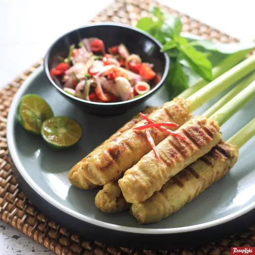

Sate Lilit
sate ala Bali yang satu ini memiliki bahan dasar daging ikan yang dicampur dengan parutan kelapa, aneka bumbu dan rempah, lalu dililitkan ke tusukan bambu tipis untuk kemudian dibakar hingga matang. Jika tak ada tusukan bambu, anda bisa menggantinya dengan batang serai, yang juga akan menambah kenikmatannya. Daging fillet yang biasa digunakan berasal dari ikan tuna. Namun anda bisa menggantinya dengan ikan berdaging putih lainnya seperti tenggiri, gurame atau fillet ikan dori yang saat ini mudah sekali didapatkan.
Bahan-bahan yang perlu Anda siapkan adalah:
- Daging fillet ikan tuna - 300 gram
- Santan kental - 50 ml
- Kelapa parut - 50 gram
- 125 gr daging ayam, cincang halus
- Serai, memarkan - 1 batang
- Daun salam - 2 lembar
- Tusukan bumbu pipih atau batang serai untuk sate - secukupnya
Bumbu Halus :
- Cabe merah keriting - 3 buah
- Bawang merah - 5 siung
- Bawang putih - 3 siung
- Jahe - 1 ruas jari
- Terasi, bakar - 1 sdt
- Daun jeruk, buang tulang daunnya - 1 lembar
- Kunyit - 2 cm
- Kemiri, sangrai - 2 butir
- Garam - 1 sdt
- Gula merah - 1/2 sdt
- Minyak goreng - 1 sdm
Cara Membuat Sate Lilit:
- 1. Tumis bumbu halus sampai wangi. Masukkan serai dan daun salam, tumis kembali. Matikan api, dinginkan.
- 2. Haluskan daging ikan, santan, dan kelapa parut menggunakan blender/food processor/chopper.
- 3. Campur adonan ikan dengan bumbu halus. Aduk rata.
- 4. Ambil adonan secukupnya, kepal-kepal lalu rekatkan pada tusukan sate atau batang serai hingga setengah tinggi tusukan. Lakukan hingga semua adonan habis.
- 5. Panggang sate di grill pan atau wajan datar hingga matang dan berwarna kecoklatan.
- 6. Sate Lilit siap disajikan.